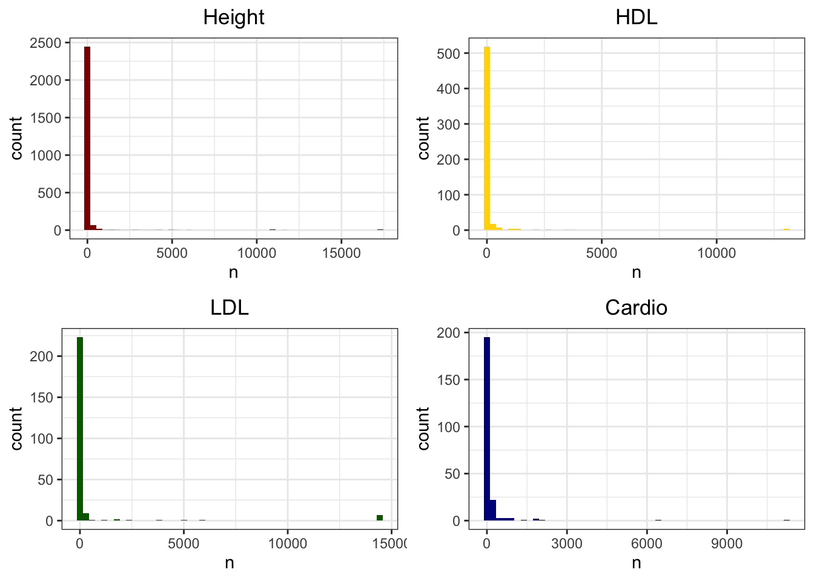
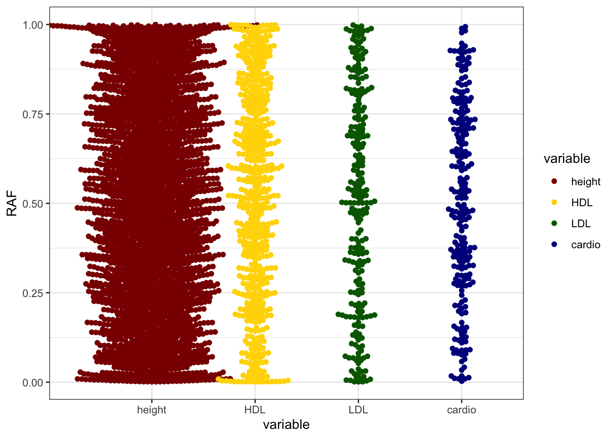

CS_Results
Jennifer Blanc
12/2/2019
Last updated: 2019-12-09
Checks: 7 0
Knit directory: infer_mutational_bias/analysis/
This reproducible R Markdown analysis was created with workflowr (version 1.4.0). The Checks tab describes the reproducibility checks that were applied when the results were created. The Past versions tab lists the development history.
Great! Since the R Markdown file has been committed to the Git repository, you know the exact version of the code that produced these results.
Great job! The global environment was empty. Objects defined in the global environment can affect the analysis in your R Markdown file in unknown ways. For reproduciblity it’s best to always run the code in an empty environment.
The command set.seed(20191108) was run prior to running the code in the R Markdown file. Setting a seed ensures that any results that rely on randomness, e.g. subsampling or permutations, are reproducible.
Great job! Recording the operating system, R version, and package versions is critical for reproducibility.
Nice! There were no cached chunks for this analysis, so you can be confident that you successfully produced the results during this run.
Great job! Using relative paths to the files within your workflowr project makes it easier to run your code on other machines.
Great! You are using Git for version control. Tracking code development and connecting the code version to the results is critical for reproducibility. The version displayed above was the version of the Git repository at the time these results were generated.
Note that you need to be careful to ensure that all relevant files for the analysis have been committed to Git prior to generating the results (you can use wflow_publish or wflow_git_commit). workflowr only checks the R Markdown file, but you know if there are other scripts or data files that it depends on. Below is the status of the Git repository when the results were generated:
Ignored files:
Ignored: .DS_Store
Ignored: .Rhistory
Ignored: .Rproj.user/
Ignored: .snakemake/conda-archive/
Ignored: .snakemake/conda/
Ignored: .snakemake/locks/
Ignored: .snakemake/scripts/
Ignored: .snakemake/shadow/
Ignored: .snakemake/singularity/
Ignored: data/47UKBB/
Ignored: output/.DS_Store
Ignored: output/47UKBB/
Note that any generated files, e.g. HTML, png, CSS, etc., are not included in this status report because it is ok for generated content to have uncommitted changes.
These are the previous versions of the R Markdown and HTML files. If you’ve configured a remote Git repository (see ?wflow_git_remote), click on the hyperlinks in the table below to view them.
| File | Version | Author | Date | Message |
|---|---|---|---|---|
| Rmd | f80bb2e | jgblanc | 2019-12-09 | fixed RAF plot |
| html | 20ae584 | jgblanc | 2019-12-09 | Build site. |
| Rmd | 702e047 | jgblanc | 2019-12-09 | Addes all traits |
| html | 76ee017 | jgblanc | 2019-12-03 | Build site. |
| Rmd | d739aa7 | jgblanc | 2019-12-03 | Worked on sample analysis |
| html | b1c6420 | jgblanc | 2019-12-02 | Build site. |
| Rmd | d847430 | jgblanc | 2019-12-02 | Fixed typo |
| html | f245601 | jgblanc | 2019-12-02 | Build site. |
| Rmd | f73f5ce | jgblanc | 2019-12-02 | Fixed table |
| html | d501548 | jgblanc | 2019-12-02 | Build site. |
| Rmd | 76aeb72 | jgblanc | 2019-12-02 | Started analyzing cs results |
Introduction
Here I will first outline the data processing I did on the data we got from this paper link. After I outline all of the data processing, I will look at the data for HDL and see what we have.
From Omer directly we recieved 8 .parquet files that had the alpha values from SUSIE for all of the SNPs used in the analysis. For each of the four traits we asked for (HDL, LDL, Height, and Cardiovascular disease) we got an .parquet alpha file for both functionally and non-functionally informed fine-mapping analysis. I wrote a script (code/parse_alphas_47UKBB.R) to create credible sets from each alpha file. The goal of this script is to create 95% credible sets from the alpha values. It loops through the SNPs on each chromosome and then loops through each region in the chromosome. While the 3Mb regions are overlapping, SNPs in the alpha file are only listed onece, in the regions for which they are most central to. Within each region I sorted all the SNPs on the alpha_1 column and calculated the cumulative sum, I took the first x number of SNPs until the cumulative sum was greater than 0.95 and assigned them a unique ID (chr:region:cs). I repeated this for all 10 alpha columns in the region.
The table below shows the number of SNPs in the alpha files:
| Trait | alphas |
|---|---|
| HDL | 15589643 |
| LDL | 11708765 |
| Cardio | 15236185 |
| Height | 16820494 |
From Omer I also recieved 4 files (one per trait) named bolt_337K_unrelStringentBrit_MAF0.001_v3.{trait}.bgen.stats that contains the bolt summary statistics for all the SNPs listed in the alpha files (and more). This file also includes the frequency of the effect allele (A1).
After I sorted the alpha files as described above, I simply joined that data frame to the bolt data. I kept all of SNPs from the alpha file that fell into a CS and just added the bolt info for those SNPs (left_join). So the output of the parse_alphas_47UKBB.R script is a table with all the SNPs that I assigned to a CS with all their information and the bolt GWAS information.
Next I used a series of scripts to figure out which allele is derived for each SNP and the frequencies of different alleles. First I recyled a script (code/get_evolutionary_information_from_1kg_rsID.py) which takes file I have from 1000 Genomes which lists which allele at each SNP is the derived one and the output of my parsed_alpha script and check if the A1 allele (the effect allele) is derived or not and records T or F in an additional column.
We now have all the information we need. The final script (code/get_RAF.R) just adds a bunch of columns we might be interested in. First it checks the sign of the BETA column and assigns the SNP as risk or protective (postive beta = risk). It then calculates the risk allele frequency (1 - EAF, if a protective SNP) and derived allele frequency (1 - EAF, if EA ancestral), and MAF (1 - EAF, if EAF >= 0.5). I also split up the unique ID into separate columns to make it easier to works with. I also transform the BETA (calculated from a standardized genotype matrix) to a biologically meaningful effect size, by dividing the BETA column by sqrt(2 x MAF x (1 - MAF)), I call this column ES for effect size.
Summary of Data
Load processed data
height <- fread("../output/47UKBB/RAF_info_added/body_HEIGHTz_RAF.txt")
HDL <- fread("../output/47UKBB/RAF_info_added/biochemistry_HDLcholesterol_RAF.txt")
LDL <- fread("../output/47UKBB/RAF_info_added/biochemistry_LDLdirect_RAF.txt")
cardio <- fread("../output/47UKBB/RAF_info_added/disease_CARDIOVASCULAR_RAF.txt")How many SNPs do we have and how many SNPs fall into more than one CS?
Height - We have 379,600 SNPs, 19883 of them fall in more than one CS
nrow(height)[1] 379600table(duplicated(height$SNP))
FALSE TRUE
180770 198830 HDL - We have 109,271 SNPs, 55,488 of them fall in more than one CS
nrow(HDL)[1] 109271table(duplicated(HDL$SNP))
FALSE TRUE
53783 55488 LDL - We have 129,616 SNPs, 86,623 of them fall in more than one CS
nrow(LDL)[1] 129616table(duplicated(LDL$SNP))
FALSE TRUE
42993 86623 Cardio - We have 39,662 SNPs, 43 of them fall in more than one CS
nrow(cardio)[1] 39662table(duplicated(cardio$SNP))
FALSE TRUE
39619 43 How many unique credible sets did we make?
Height
length(unique(height$UNIQ_ID))[1] 2563HDL
length(unique(HDL$UNIQ_ID))[1] 563LDL
length(unique(LDL$UNIQ_ID))[1] 247Cardio
length(unique(cardio$UNIQ_ID))[1] 232We have the bolt summary statistics for the all the SNPs in all of our credible sets in all 4 of our traits.
What is the distribution of number of SNPs in a credible set?
counts_height <- height %>% group_by(UNIQ_ID) %>% tally()
counts_HDL <- HDL %>% group_by(UNIQ_ID) %>% tally()
counts_LDL <- LDL %>% group_by(UNIQ_ID) %>% tally()
counts_cardio <- cardio %>% group_by(UNIQ_ID) %>% tally()
p1 <- ggplot(counts_height, aes(x = n)) + geom_histogram(bins=50, fill = "darkred") + theme_bw() + ggtitle("Height") + theme(plot.title = element_text(hjust = 0.5))
p2 <- ggplot(counts_HDL, aes(x = n)) + geom_histogram(bins=50, fill = "gold") + theme_bw() + ggtitle("HDL") + theme(plot.title = element_text(hjust = 0.5))
p3 <- ggplot(counts_LDL, aes(x = n)) + geom_histogram(bins=50, fill = "darkgreen") + theme_bw() + ggtitle("LDL") + theme(plot.title = element_text(hjust = 0.5))
p4 <- ggplot(counts_cardio, aes(x = n)) + geom_histogram(bins=50, fill = "darkblue") + theme_bw() + ggtitle("Cardio") + theme(plot.title = element_text(hjust = 0.5))
ggarrange(p1, p2, p3, p4)
Height: The largest CS’s are on chromosome 5 (n~17,000), the are also CS’s (n~11,000) that look like they are in the long range LD region of chromosome 8.
HDL: The largest CS’s (n~13,000) are in the long range chr 8 LD region
LDL: The largest CS’s (n~14,000) are in the long range chr 8 LD region
Cardio: The largest CS (n~11,000) is on chromosome 16 and the next largest is on chromosome 11 near (2 megabases before) the long range LD listed in the paper
Let’s remove all credible sets with more than 100 SNPs and look at the distribution of number of SNPs in CS’s again:
counts_height <- subset(counts_height, counts_height$n <= 100)
counts_HDL <- subset(counts_HDL, counts_HDL$n <= 100)
counts_LDL <- subset(counts_LDL, counts_LDL$n <= 100)
counts_cardio <- subset(counts_cardio, counts_cardio$n <= 100)
p1 <- ggplot(counts_height, aes(x = n)) + geom_histogram(bins=50, fill = "darkred") + theme_bw() + ggtitle("Height") + theme(plot.title = element_text(hjust = 0.5))
p2 <- ggplot(counts_HDL, aes(x = n)) + geom_histogram(bins=50, fill = "gold") + theme_bw() + ggtitle("HDL") + theme(plot.title = element_text(hjust = 0.5))
p3 <- ggplot(counts_LDL, aes(x = n)) + geom_histogram(bins=50, fill = "darkgreen") + theme_bw() + ggtitle("LDL") + theme(plot.title = element_text(hjust = 0.5))
p4 <- ggplot(counts_cardio, aes(x = n)) + geom_histogram(bins=50, fill = "darkblue") + theme_bw() + ggtitle("Cardio") + theme(plot.title = element_text(hjust = 0.5))
ggarrange(p1, p2, p3, p4)
Sample analysis
RAF
Using the data we have, I’m doing to try and look at a few thing that I think are interesting. The first thing I want to look at is the average risk allele frequency. To do this I will take the weigted average of the risk allele freq in all of the CS’s for each trait.
avg_height <- height%>% group_by(UNIQ_ID) %>% summarise(height = (sum(RAF * ALPHA)/sum(ALPHA))) %>% select(height)
avg_HDL <- HDL %>% group_by(UNIQ_ID) %>% summarise(HDL = (sum(RAF * ALPHA)/sum(ALPHA))) %>% select(HDL)
avg_LDL <- LDL %>% group_by(UNIQ_ID) %>% summarise(LDL = (sum(RAF * ALPHA)/sum(ALPHA))) %>% select(LDL)
avg_cardio <- cardio %>% group_by(UNIQ_ID) %>% summarise(cardio = (sum(RAF * ALPHA)/sum(ALPHA))) %>% select(cardio)
avg_RAF <- cbind.fill(avg_height, avg_HDL, avg_LDL, avg_cardio, fill = NA)
avg_RAF <- melt(avg_RAF)No id variables; using all as measure variablescols <- c("darkred", "gold", "darkgreen", "darkblue")
ggplot(avg_RAF, aes(y=value, x=variable, color = variable)) + geom_beeswarm() + scale_color_manual(values = cols) + theme_bw() + ylab("RAF")Warning: Removed 6647 rows containing missing values (position_beeswarm).
All four traits have an average risk allele frequency of ~0.5 and have a fairly even distribution across all possible risk allele frequencies.
Distribution of derived alleles
We are also interested in the distribution of derived risk allels vs ancestral risk alleles. First we wil plot the absolute value of the effect size vs risk allele frequency colored by the evolutionary status of the risk allele for all SNPs that are in credible sets (note I remove duplicated SNPs that fall in multiple credible sets)
p1 <- height %>% distinct(SNP, .keep_all = TRUE) %>% ggplot(aes(x=RAF,y=abs(ES), color = RISK_DERIVED)) + geom_point(alpha = 0.5) + theme_bw() + scale_color_manual(values = c("darkred","navy")) + ggtitle("Height") + theme(plot.title = element_text(hjust = 0.5))
p2 <- HDL %>% distinct(SNP, .keep_all = TRUE) %>% ggplot(aes(x=RAF,y=abs(ES), color = RISK_DERIVED)) + geom_point(alpha = 0.5) + theme_bw() + scale_color_manual(values = c("darkred","navy")) + ggtitle("HDL") + theme(plot.title = element_text(hjust = 0.5))
p3 <- LDL %>% distinct(SNP, .keep_all = TRUE) %>% ggplot(aes(x=RAF,y=abs(ES), color = RISK_DERIVED)) + geom_point(alpha = 0.5) + theme_bw() + scale_color_manual(values = c("darkred","navy")) + ggtitle("LDL") + theme(plot.title = element_text(hjust = 0.5))
p4 <- cardio %>% distinct(SNP, .keep_all = TRUE) %>% ggplot(aes(x=RAF,y=abs(ES), color = RISK_DERIVED)) + geom_point(alpha = 0.5) + theme_bw() + scale_color_manual(values = c("darkred","navy")) + ggtitle("Cardio") + theme(plot.title = element_text(hjust = 0.5))
ggarrange(p1,p2,p3,p4, common.legend = T, legend = "bottom")
What I’m confused about in these plots is the shape - they look less U shaped and instead have sharp conrners. I’m thinking its because we don’t actually have a ‘threshold’ for calling a single variant significant. So we have a bunch of variants with very small effect sizes that are included in large CS’s? I’m not sure about the variants with effect sizes > 100, is that normal?
Now let’s use a weighted average of the effect size within each CS
p1 <- height %>% group_by(UNIQ_ID) %>% summarise(ES = (sum(ES * ALPHA)/sum(ALPHA)), raf = (sum(RAF *ALPHA)/sum(ALPHA))) %>% ggplot(aes(x=raf,y=abs(ES))) + geom_point(color = "darkred") + theme_bw() + ggtitle("Height") + theme(plot.title = element_text(hjust = 0.5))
p2 <- HDL %>% group_by(UNIQ_ID) %>% summarise(ES = (sum(ES * ALPHA)/sum(ALPHA)), raf = (sum(RAF *ALPHA)/sum(ALPHA))) %>% ggplot(aes(x=raf,y=abs(ES))) + geom_point(color = "gold") + theme_bw() + ggtitle("HDL") + theme(plot.title = element_text(hjust = 0.5))
p3 <- LDL %>% group_by(UNIQ_ID) %>% summarise(ES = (sum(ES * ALPHA)/sum(ALPHA)), raf = (sum(RAF *ALPHA)/sum(ALPHA))) %>% ggplot(aes(x=raf,y=abs(ES))) + geom_point(color = "darkgreen") + theme_bw() + ggtitle("LDL") + theme(plot.title = element_text(hjust = 0.5))
p4 <- cardio %>% group_by(UNIQ_ID) %>% summarise(ES = (sum(ES * ALPHA)/sum(ALPHA)), raf = (sum(RAF *ALPHA)/sum(ALPHA))) %>% ggplot(aes(x=raf,y=abs(ES))) + geom_point(color = "darkblue") + theme_bw() + ggtitle("Cardio") + theme(plot.title = element_text(hjust = 0.5))
ggarrange(p1,p2,p3,p4, common.legend = T, legend = "bottom")
We can’t really color by the derived ancestral status because there are multiple SNPs with different status’s in each set - we will compare proportion of derived/ancestral alleles within each set in the next section.
Distribution of D/A alleles in CS
First let’s pick a few regions with multiple credible sets:
ms_region <- subset(height, height$CHR == 1 & height$REGION_ID == 2)
ggplot(ms_region, aes(x=BP, y=ES, color = RISK_DERIVED, shape = as.factor(CS_ID))) + geom_point() + theme_bw() + ggtitle("Height") + theme(plot.title = element_text(hjust = 0.5))
ms_region <- subset(HDL, HDL$CHR == 1 & HDL$REGION_ID == 21)
ggplot(ms_region, aes(x=BP, y=ES, color = RISK_DERIVED, shape = as.factor(CS_ID))) + geom_point() + theme_bw() + ggtitle("HDL") + theme(plot.title = element_text(hjust = 0.5))
Its hard to learn anything by just looking at a few regions…let’s try to group CS and look at the proportion of risk alleles that are derived within a credible set.
p1 <- height %>% drop_na(RISK_DERIVED) %>% group_by(UNIQ_ID) %>% summarise(prop_ad = (sum(RISK_DERIVED == T)/n())) %>% ggplot(aes(x=prop_ad)) + geom_histogram(fill = "darkred", bins = 40) + theme_bw() + ggtitle("Height") + theme(plot.title = element_text(hjust = 0.5))
p2 <- HDL %>% drop_na(RISK_DERIVED) %>% group_by(UNIQ_ID) %>% summarise(prop_ad = (sum(RISK_DERIVED == T)/n())) %>% ggplot(aes(x=prop_ad)) + geom_histogram(fill = "gold", bins = 40) + theme_bw() + ggtitle("HDL") + theme(plot.title = element_text(hjust = 0.5))
p3 <- LDL %>% drop_na(RISK_DERIVED) %>% group_by(UNIQ_ID) %>% summarise(prop_ad = (sum(RISK_DERIVED == T)/n())) %>% ggplot(aes(x=prop_ad)) + geom_histogram(fill = "darkgreen", bins = 40) + theme_bw() + ggtitle("LDL") + theme(plot.title = element_text(hjust = 0.5))
p4 <- cardio %>% drop_na(RISK_DERIVED) %>% group_by(UNIQ_ID) %>% summarise(prop_ad = (sum(RISK_DERIVED == T)/n())) %>% ggplot(aes(x=prop_ad)) + geom_histogram(fill = "darkblue", bins = 40) + theme_bw() + ggtitle("Cardio") + theme(plot.title = element_text(hjust = 0.5))
ggarrange(p1,p2,p3,p4, common.legend = T, legend = "bottom")
| Version | Author | Date |
|---|---|---|
| 20ae584 | jgblanc | 2019-12-09 |
For all traits approximately half of the credible sets have either all derived or all ancestral alleles, now we will compare the proportion of derived risk alleles within a credible set to the average RAF within the set.
weight by ALPHA
p1 <- height %>% drop_na(RISK_DERIVED) %>% group_by(UNIQ_ID) %>% summarise(prop_ad = (sum((RISK_DERIVED == T) * ALPHA)/sum(ALPHA)), raf = (sum(RAF * ALPHA)/sum(ALPHA))) %>% ggplot(aes(x=raf, y=prop_ad)) + geom_point(color = "darkred") + theme_bw() + ylab("Proportion of derived risk alleles") + ggtitle("Height") + theme(plot.title = element_text(hjust = 0.5))
p2 <- HDL %>% drop_na(RISK_DERIVED) %>% group_by(UNIQ_ID) %>% summarise(prop_ad = (sum((RISK_DERIVED == T) * ALPHA)/sum(ALPHA)), raf = (sum(RAF * ALPHA)/sum(ALPHA))) %>% ggplot(aes(x=raf, y=prop_ad)) + geom_point(color = "gold") + theme_bw() + ylab("Proportion of derived risk alleles") + ggtitle("HDL") + theme(plot.title = element_text(hjust = 0.5))
p3 <- LDL %>% drop_na(RISK_DERIVED) %>% group_by(UNIQ_ID) %>% summarise(prop_ad = (sum((RISK_DERIVED == T) * ALPHA)/sum(ALPHA)), raf = (sum(RAF * ALPHA)/sum(ALPHA))) %>% ggplot(aes(x=raf, y=prop_ad)) + geom_point(color = "darkgreen") + theme_bw() + ylab("Proportion of derived risk alleles") + ggtitle("LDL") + theme(plot.title = element_text(hjust = 0.5))
p4 <- cardio %>% drop_na(RISK_DERIVED) %>% group_by(UNIQ_ID) %>% summarise(prop_ad = (sum((RISK_DERIVED == T) * ALPHA)/sum(ALPHA)), raf = (sum(RAF * ALPHA)/sum(ALPHA))) %>% ggplot(aes(x=raf, y=prop_ad)) + geom_point(color = "darkblue") + theme_bw() + ylab("Proportion of derived risk alleles") + ggtitle("Cardio") + theme(plot.title = element_text(hjust = 0.5))
ggarrange(p1,p2,p3,p4, common.legend = T, legend = "bottom" )
| Version | Author | Date |
|---|---|---|
| 20ae584 | jgblanc | 2019-12-09 |
sessionInfo()R version 3.5.1 (2018-07-02)
Platform: x86_64-apple-darwin15.6.0 (64-bit)
Running under: macOS High Sierra 10.13.6
Matrix products: default
BLAS: /Library/Frameworks/R.framework/Versions/3.5/Resources/lib/libRblas.0.dylib
LAPACK: /Library/Frameworks/R.framework/Versions/3.5/Resources/lib/libRlapack.dylib
locale:
[1] en_US.UTF-8/en_US.UTF-8/en_US.UTF-8/C/en_US.UTF-8/en_US.UTF-8
attached base packages:
[1] stats graphics grDevices utils datasets methods base
other attached packages:
[1] ggbeeswarm_0.6.0 rowr_1.1.3 ggpubr_0.2
[4] magrittr_1.5 arrow_0.15.0 forcats_0.4.0
[7] stringr_1.4.0 dplyr_0.8.1 purrr_0.3.2
[10] readr_1.3.1 tidyr_0.8.3 tibble_2.1.3
[13] ggplot2_3.2.1 tidyverse_1.2.1 data.table_1.12.2
loaded via a namespace (and not attached):
[1] beeswarm_0.2.3 tidyselect_0.2.5 xfun_0.7 reshape2_1.4.3
[5] haven_2.1.0 lattice_0.20-38 colorspace_1.4-1 generics_0.0.2
[9] htmltools_0.3.6 yaml_2.2.0 rlang_0.4.1 pillar_1.4.2
[13] glue_1.3.1 withr_2.1.2 bit64_0.9-7 modelr_0.1.4
[17] readxl_1.3.1 plyr_1.8.4 lifecycle_0.1.0 munsell_0.5.0
[21] gtable_0.3.0 workflowr_1.4.0 cellranger_1.1.0 rvest_0.3.4
[25] evaluate_0.14 labeling_0.3 knitr_1.23 vipor_0.4.5
[29] broom_0.5.2 Rcpp_1.0.3 scales_1.1.0 backports_1.1.5
[33] jsonlite_1.6 farver_2.0.1 fs_1.3.1 bit_1.1-14
[37] gridExtra_2.3 hms_0.4.2 digest_0.6.22 stringi_1.4.3
[41] cowplot_0.9.4 grid_3.5.1 rprojroot_1.3-2 cli_1.1.0
[45] tools_3.5.1 lazyeval_0.2.2 crayon_1.3.4 whisker_0.3-2
[49] pkgconfig_2.0.3 xml2_1.2.0 lubridate_1.7.4 assertthat_0.2.1
[53] rmarkdown_1.13 httr_1.4.0 rstudioapi_0.10 R6_2.4.1
[57] nlme_3.1-140 git2r_0.25.2 compiler_3.5.1